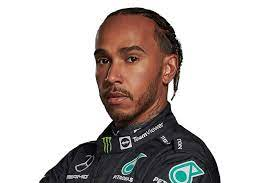

"La categoría reina del automovilismo, prestigiosa, popular y longeva del mundo que involucra desde la composición de los átomos hasta la fusión de el hombre y la máquina en busca de la perfección."
Todo esto dentro de un monoplaza, sus pilotos,diversos equipos y múltiples circuitos de diversas partes del mundo denominados Grandes Premios (GP) y el torneo que las agrupa Campeonato Mundial de Fórmula 1. Esta categoría exige y dispone de las mejores tecnologías e ingenierías mundiales a lo largo de la historia, obligándose a la innovación continua. Así mismo con la preparación física y psíquica de sus pilotos, preparadores, mecánicos, ingenieros y demás personal del equipo.
Circuitos
En cuanto a circuitos, muchos países fueron anfitriones de los grandes premios y la mayoría de los circuitos de carreras donde se celebran los Grandes Premios son autódromos, aunque también se utilizan circuitos callejeros como Mónaco, Melbourne, Singapur y Bakú. Se les exige que las instalaciones cumplan requisitos de seguridad y comodidad, como salidas de escape amplias, superficie de pista lisa y ancha, y espacio para más de 50.000 personas. La longitud del trazado está limitada entre 3 a 7 kilómetros. Los circuitos más conocidos de la F1 son los siguientes:
-

Montecarlo (GP de Mónaco)
-

Silverstone (GP de Inglaterra)
-

Imola (GP de San Marino y GP de Emilia-Romaña)
-
Monza (GP de Italia)
-

Red Bull Ring (GP de Austria)
-

Spa-Francorchamps (GP de Bélgica)
-

Interlagos (GP de Brasil)
-
Cataluña (GP de España)
-
Paul Ricard (GP de Francia)
Pilotos
Para hablar de la F1 debemos remontarnos a la época del 1950, a sus inicios, en los cuales participaron escuderías como Ferrari, Alfa Romeo y Maserati. Con el paso del tiempo algunas fueron reemplazadas por otras nuevas como McLaren, Williams, Red Bull y Mercedes quien volvió luego de varias décadas, estas al día de la fecha siguen vigentes y son de las más imponentes e importantes. Diferentes fueron las escuadras y pilotos que participaron en ella, y tuvieron el honor de llegar a lo más alto de la competición a nivel automovilístico. A continuación, algunos de los 33 grandes pilotos que supo tener y tiene la categoría que han obtenido el Mundial de Pilotos
Michael Schumacher y Lewis Hamilton ostenta los récords de títulos con siete, Juan Manuel Fangio cinco, Alain Prost y Sebastian Vettel lograron cuatro, y con tres se encuentran Jack Brabham, Jackie Stewart, Niki Lauda, Nelson Piquet y Ayrton Senna. Con un solo titulo y como actual campeón mundial, se encuentra el joven de tan solo 24 años, Max Verstappen, quien logro el campeonato en la ultima carrera del año pasado tras una ardua batalla contra el heptacampeón, Lewis Hamilton, durante todo el campeonato.
-
Michael Schumacher
-

Lewis Hamilton
-
Sebastian Vettel
-

Juan Manuel Fangio
-
Alain Prost
-
Ayrton Senna
-
Niki Lauda
-
Nelson Piquet
-
Max Verstappen
Organización
Excepto para la organización y escuderías las cuales comienzan con su cronograma el día lunes, la competición se celebra al final de semana. El fin de semana de carrera comienza el día viernes, con dos sesiones de entrenamientos libres, el sábado se realiza otra sesión de entrenamientos, de una hora y a continuación la clasificación para el domingo. Esta se realiza de manera eliminatoria, la Q1 dura 18 minutos, y en ella a partir de los 7 minutos (por cada minuto y medio) se eliminan los tiempos más lentos. De los 20 pilotos solo pasan 15 a la Q2. La Q2 dura 15 minutos, a partir de los 6 minutos se eliminan los tiempos más lentos. De los 15 pilotos pasan solo 10. La Q3 dura 12 minutos a partir de los 5 minutos, se eliminan los tiempos más lentos y así hasta terminar el tiempo. Se completa la grilla de partida, se determina las posiciones de la clasificación y la pole position. El domingo antes de comenzar la carrera se da la denominada vuelta de formación donde se aprovecha para calentar motores, frenos y neumáticos.
Motores
Los fórmula 1 actualmente usan motores híbridos de combustión interna de 1.6 Litros V6 a 90° de cuatro tiempos turboalimentado.Esto generan una potencia de casi 950 CV o 1000 CV que se producen gracias a la alta velocidad de rotación de 15000 RPM (revoluciones por minuto).La carrera de la biela es de 39.7 mm y el diámetro del cilindro es de 98.0 mm.El consumo es de 34L cada 100 km y su peso es de 145 KG.Todo esto permite al monoplaza alcanzar una velocidad máxima promedio de 350 km/h, llegando a 370 km/h.
Equipos y Pilotos 2022
En este año podemos encontrar los siguientes pilotos con sus respectivas escuderias:

-
Lewis Hamilton
-
George Russell


Max Verstappen
-
Sergio Pérez

-
Charles Leclerc
-
Carlos Sainz

-
Daniel Riccardo
-
Lando Norris

-
Pierre Gasly
-
Yuki Tsunoda

-
Valtteri Bottas
-
Guanyu Zhou

-
Alex Albon
-
Nicholas Latifi

-
Sebastian Vettel
-
Lance Stroll

-
Mick Schumacher
-
Kevin Magnussen

-
Fernando Alonso
-
Estaban Ocon